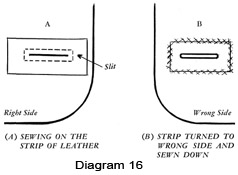

1950—How to Make Gloves
by Eunice Close
Section 1
Introduction
When you take up glove making as a craft you are joining a company which has a long and honorable history, going back through many centuries. Nobody quite knows when gloves were first worn generally by both men and women, either as a means of keeping warm or as an indispensable part of the costume. We do know that strong leather gloves were worn for hawking as far back as the twelfth century.
As time went on, elaborately decorated gloves were worn on ceremonial occasions by the clergy and nobility alike. The antique gloves which have survived to the present day are naturally those which belonged to the most important people of the time so that we have little or no information as to what ordinary people wore. In Elizabethan times gloves were made from the finest leather or from silks and satins, often elaborately embroidered with gold and gems. Many beautiful examples have come down to us from this and later periods and may be seen in museums up and down the country.
In the fifteenth century the glove makers banded together in guilds and these guilds were powerful enough to enforce their own very high standards. Gloves which did not reach this standard were seized and burned. This pride in good workmanship has survived to the present day for the old-established firms are justly proud of their high reputation.
Nowadays gloves are much simpler than those of earlier times, although the elaborate embroidery which once adorned the backs of the hands still survives in the form of the "points" with which even the simplest gloves are decorated. Gloves are, of course, a normal part of our ordinary dress and as such they vary with the changing fashions. One season, wrist length gloves may be fashionable. The next year we may all be wearing gloves halfway to our elbows. Wise glove makers will always be on the alert to detect new trends in fashion. A careful and regular survey of the goods in the glove department of a high-class store will do more than anything else to keep us up-to-date in all those details which mark off the gloves of one season from those of the next.
Materials
Modern glove makers, working in their own homes, will no doubt want to make gloves almost entirely by hand. Gloves made in factories are nearly always sewn on special machines, but the hand worker, who usually has only an ordinary sewing machine available, will find it much easier to sew seams by hand, although the points and wrist edges are often better if they are stitched by machine. The great advantage of making gloves by hand is that each pair can be made to fit the wearer for whom it is intended.
Leather gloves are, of course, the most hard-wearing of all. They keep their shape well and are warm and comfortable. When choosing leather for making gloves, remember that it must be supple, fairly thin and attractive to look at and to feel. Suede, Persian, kid, capeskin, real or imitation pigskin and chamois leather can all be used. Suede can be obtained in a variety of lovely colors, but most of the others come in black, gray, navy and varying shades of brown, ranging from deepest brown to light fawn. Chamois is a pale yellow and doeskin is a cream that is almost white. I have lately seen some most attractive dyed chamois skins. I have not had an opportunity of making or wearing gloves made from these skins, so I cannot say whether the dyes are fast or not, but if the skin is of good quality they have almost the appearance of suede and should be worth considering. The following skins are suitable for making gloves: buckskin, cabretta, calfskin, capeskin, chamois, deerskin, doeskin, goatskin, mocha, kidskin, pigskin.
The average size of the skin works out at from four to eight square feet. If you are in any doubt as to whether the skin you want will be big enough for the gloves you want to make you can always take the pattern to the leather shop with you and measure it there. Examine each skin carefully and avoid any leather which feels brittle or which has a very shiny surface. Hold it up to the light and note whether there are many thin places. If there are, do not buy it, for although it may appear cheaper at the time, you will find it will prove to be wasteful in cutting out since you will have to avoid all the thin places. Look well at the edges of the leather and pull gently between the fingers. If the skin shows a tendency to tear and looks papery, do not buy it for it will be difficult to sew and will not wear well.
Suede is a lovely material for making formal gloves, but great care must be taken with the cutting out owing to the "pile" which must all go the same way. It is thus impossible to save any leather by turning the pattern upside down. Suede does not, I am afraid, wear quite so well as other types of leather as it is apt to go shiny. I have never found a really satisfactory method of cleaning, or having cleaned, gloves made from suede. One solution of the difficulty is to make the palms, which get the most wear, of leather and the backs of suede. Two colors can sometimes be combined very effectively.
Fur-backed gloves for winter wear are fashionable as well as extremely warm, and although they may take a little longer to make, they are well worth the extra trouble. Sheepskin and lamb's wool, too, can be used for gloves and the woolly side can be inside or outside the glove according to the taste of the wearer and the purpose for which the gloves are required.
Getting the Skin Ready
Roll the uncut skin tightly, lengthwise, wrongside out. Then place this firm roll of leather in a moist cloth (not drenched), and wind the cloth tightly around it. Do not permit the right side of the leather to get wet. Keep the skin in this manner from one to two hours.
Stretching the Skin
Remove the skin from moist cloth after an hour or two and proceed to stretch it along the edge of a table. This process must be thorough and it takes a bit of strength. Letting more and more of the skin hang over the side of the table, pull it evenly, strongly, in the direction of the floor. Do this stretching several times but only lengthwise. Do not stretch skin along its width.
Linings
Most people like linings for winter gloves and in this case it is better to choose a heavier type of leather than that used for unlined summer gloves. It used to be possible to buy special fleecy stockinette material for glove linings. Jersey or ordinary wool stockinette is the most suitable substitute as it will stretch with the movement of the hand. It is also possible to knit your own linings, using the glove pattern as a guide, and sewing it in place exactly as you would a lining made of material. One advantage of doing this is that you can make perfectly flat seams as you have no raw edges to worry about.
Thin dress woolens of fine quality can also be used, and to give the maximum amount of stretch should be cut on the bias. Silk jersey may appeal to people who dislike the feel of wool. Fur-lined gloves are delightful to wear and not particularly difficult to make. The chief point to remember is that the fur will take up a good deal of room in the glove and the leather part must be cut larger to allow for this. Lined gloves of any description must never be tight as they impede the circulation and so defeat their own object of keeping the wearer warm.
Other Materials
Equally suitable are fabrics of almost any texture: lace, felt, velvet, silk, jersey, matching cloth from a costume. Although leather is the best material of all for gloves, there are several others which can be pressed into service. Felt is a very good substitute for leather if a very good quality is used. It will not, of course, last as long as leather, but if you need an odd pair of gloves to complete a special outfit, felt is well worth considering. Felt mittens, attractively embroidered, are fun to make and wear. Gingham and similar materials left over from summer frocks can also be used for gloves and they have the advantage of being cool and washable. They are, however, more difficult to handle than leather since they usually require neatening.
Long suede gloves in jewel-bright colors seem to be coming back into fashion for evening wear, but if you do not wish to go to the expense of this leather, you might like to try velvet, net or nylon as a substitute. Whatever the material or purpose for which it is used, however, the principles of glove making remain the same.
Tools
The tools required for glove making are extremely simple and easy to obtain. Ordinary sewing needles are used for the finer types of leather, while for the thicker and tougher kinds you can buy three-sided gloving needles in various sizes, costing about one penny each: glove needles, sizes No. 6, No. 7, and No. 8. Size No. 6 is heavy and is used for men's gloves and women's gloves made of heavier leather. Size No. 7 is used for nearly all kinds of leather and size No. 8 for the thin and finest skins, such as kidskin, doeskin, etc. Any thread can be used, also mercerized silk; any boil-fast embroidery yarn, if thin, taken in three threads. Other excellent thread: DMC No. 8 or No. 12, CB No. 8 or No. 12 or lustre No. 24 or No. 16. Certain parts of a glove can be sewn by machine and for this purpose No. 16 or No. 18 needle is recommended.
The thread you use will depend on the leather it is to sew. You can buy special gloving thread in several thicknesses and this is obtainable in most of the colors you are likely to need. Buttonhole twist can also be used. The chief thing to remember is that the thread, like the needle, must be thin enough to pass easily through the leather without dragging and must be strong enough to stand a good deal of wear without breaking. If you find that your needle tends to get bent, change it for a stronger one. Never use a bent needle, particularly when sewing in stab stitch, as it is impossible to put it at right angles to the leather.
In addition to your needles and thread you will need a pair of very sharp scissors. These should be small enough to get round corners easily, but large enough to give smooth, even cuts. If you intend to make any fur or sheepskin gloves you will also need a razor blade or a really sharp leather knife, as fur must never be cut with scissors. When cutting out gloves it is usual to lay the pattern on the leather and draw all round it with a sharp pencil. Use a soft drawing pencil on light colored leathers and a white or yellow crayon pencil on leathers on which the black lead will not show. These latter pencils wear down very quickly so they must be sharpened frequently as you go along.
A tool for inserting press studs is useful, but not essential. These tools cost little and the press studs can be obtained in various sizes and colors for a few cents per dozen. If you have no tool, the shop where you bought the leather will probably insert the studs for you. If the leather is thin, it is wise to place a small extra piece of leather under each half of the stud, in order to give added strength.
A few additional suggestions for sewing gloves. Wear a thimble whenever you can. It is important to hold your leather flat, especially after it has been cut, avoiding unnecessary stretching or bending.
Some gloves are decorated very attractively with thonging, and if you wish to use this method you will need a leather punch for making the holes. Punches are in good supply now and are not expensive. The thonging can be bought by the yard or you can, of course, cut your own. As the amount required is usually small this is not a big job. The strips should be cut carefully and as long as possible and should be about one-eighth inch wide.
This completes the list of tools and materials — not a very formidable one when one considers what can be done with them. Patterns come into a different category and are dealt with a little later on.
Terms Used in Glove Making
The terms used in glove making are simple and few. It is not essential for the worker to know what they are, but it may be of interest if I mention them. The main part of the glove, consisting of the back, the palm, the wrist and the backs and fronts of the fingers, is known as the trank. Then come the thumb and the long narrow strips of leather which join the backs and fronts of the fingers. These are called fourchettes, and they can be either single or double. Diagram 1 shows you three different kinds of fourchettes. Single ones are used when there are no triangular shaped bits at the base of the fingers. These tiny gussets are called quirks and they are sewn to the double fourchettes as shown in Diagram 2. Leathers which possess a good deal of stretch are usually made with fourchettes only, but if the leather is fairly thick and stiff the addition of quirks will give a little more room for the hand and make the gloves wear better. The points are the decorative lines on the back of the hand. Various methods and stitches can be used for these and they vary with the fashion of the day.
The gauntlet is the part of the glove below the wrist, and nowadays it is usually cut in one with the rest of the trank. It probably dates back to the time when men wore coats of mail and gloves were worn under the steel gauntlet to prevent chafing. It serves to cover the end of the sleeve and enables the glove to be pulled on easily. Nowadays the gauntlet has almost ceased to be an important part of the glove and in some cases it is almost non-existent. In former times it was often elaborately embroidered and extended halfway up the forearm. Some gloves, of course, have deep gauntlets, particularly those worn by cyclists and motorists. Where this type of gauntlet is used it must be stiffened in some way or it will flop over the wearer's hand. An interlining of buckram or tailor's canvas can be used and the edge of the glove may be strengthened with parallel rows of machine stitching. Another method is to insert one or two rows of thin string or cord between the rows of stitching.
Stitches
The way in which a glove is sewn together is important both from the point of view of wear and appearance. Leather gloves are nearly always sewn on the right side, unless the leather is very thin. Fur is an exception to this as the seams are usually oversewn on the wrong side. The final seams, however, are done on the right side.
A close examination of a hand-made glove will soon show that the seams appear to be worked in running stitch — that is, small even stitches that are the same size on each side of the seam. (Diagram 3.) Actually the stitch is called "stab stitch" and it is worked in a special way. The two pieces of leather are held together wrong sides facing and the edges absolutely level. The needle is then pushed through the two layers at right angles and the thread is pulled through. (Diagram 4.) The second half of the stitch is made by pushing the needle through from the back to the front, again with the needle at right angles. Thus each stitch is made in two movements. Never try to use ordinary running stitch, in which a small amount of the seam is taken up by the needle, as even thin leather is too thick for this to be successful.
If you want your gloves to be extra strong you can use double running. The first half of the stitch is worked in stab stitch in the ordinary way, then a second row of stab stitch is worked in the opposite direction filling in the spaces left on the previous row. (Diagram 5.) This stitch is extremely strong and if well done looks like machine stitching. The needle and thread used must both be fairly fine as the needle goes through each hole in the leather twice.
Oversewing can be used either on the right or wrong side. Where extra strength is required a second row can be worked in the opposite direction to form a row of crosses. This stitch, if evenly worked, is very decorative and looks well if a contrasting color is used. (Diagram 6.)
Backstitching can be used for seams which are worked on the wrong side.
Machine stitching can be used to good effect round the wrist edge of a glove
as it is not only quicker than hand sewing, it helps to flatten and stiffen
the edge. Decorative stitching can be used for the points. They can be worked
in stab stitch, double oversewing (cross stitch) or herringbone stitch. When
making embroidered gloves any of the well-known embroidery stitches may be
used. Herringbone stitch may also be used for sewing down the hem or binding
on the wrist edge, and for sewing in a strip of elastic where it is needed
to give a good fit at the wrist. The method for putting in this elastic is
shown in Diagram 7. You will notice that the stitches go through the material
only and not through the elastic which is sewn down at each end. If the stitch
is worked evenly, the glove shows an attractive pleated effect on the right
side.
Diagram 7. You will notice that the stitches go through the material
only and not through the elastic which is sewn down at each end. If the stitch
is worked evenly, the glove shows an attractive pleated effect on the right
side.
One drawback to sewing gloves by hand is that it is almost impossible to pin or baste the leather, as the holes made cannot be removed and not only spoil the appearance of the glove, but weaken the leather. For this reason you must be prepared to place and sew your seams at the same time. It means that you have to work rather slowly, although experience soon shows you the best way to go about it. Should you, for any reason, find it imperative to hold any particular seam in place as you work, use ordinary wire paper clips. Be very careful not to allow the points of the wire to scratch the surface of the leather.
Decorative Details
 The decorative lines or "points" which adorn the back of the glove
have already been mentioned. These points often form a definite part of the
design and add much to the finished appearance of the glove. They are made
while the trank is still flat, usually after the thumb has been put in. Most
patterns give some indication as to where the points should begin and end.
The decorative lines or "points" which adorn the back of the glove
have already been mentioned. These points often form a definite part of the
design and add much to the finished appearance of the glove. They are made
while the trank is still flat, usually after the thumb has been put in. Most
patterns give some indication as to where the points should begin and end.
The classic method, used on plain gloves of the tailored type, particularly those worn by men, is to put in three small tucks. These are worked either in stab stitch or by machine. The tucks should start just under the base of the fingers and end a little above the wrist. The two outer ones usually slope in a little towards the bottom.
In order to avoid the crooked seam lines so often seen in these three decorative tucks, you should slant the middle line toward the little finger, rather than parallel to the straight folding line of the glove. The correct way of putting on the tucks is shown in Diagram 8A. Another attractive method is to put two curved tucks, starting about one-half inch apart, near the fingers and curving outwards to finish at the side seam on the outer edge and just below the thumb on the inner edge. (Diagram 8.) A third tuck is sometimes placed between the other two.
Many factory-made gloves have the three lines worked in machine stitch. Each line consists of three rows of stitching about one-sixteenth inch apart. The stitches must be very small and the lines must be perfectly straight. A row of crossed oversewing also looks well and is a little more definite than stab stitch tucks, especially if a contrasting thread is used.
Another method is to decorate the back of the hand with a simple design executed in thonging. Plastic thonging can be used if liked, but personally I find this a little stiff for glove making and prefer to use strips one-eighth inch wide, cut from the leather I am using for the gloves. This is purely a matter of taste and there are times when the plastic thonging with its shiny surface presents an effective contrast. Four methods of using thonging are shown in Diagrams 9, 10, 11, and 12. The first three are worked by punching two parallel rows of holes five-eighths inch away from each other each way. For the first two the number of holes may be odd or even, but for the design shown in Diagram 11 the number of holes must be divisible by four. You will notice that if you want to work Diagram 10 you must omit the top hole on one row and the bottom hole on the other, according to which hand the glove is intended for. For the fourth design you will need three rows of holes arranged as shown in the diagram.
When making felt gloves the points may be worked in chain stitch or stem stitch, using either a matching or contrasting color. Evening gloves look well if the lines are worked with beads or sequins. A simple scroll design also looks well, and when the gloves are elbow length this design may be carried right up the back of the glove.
Glove Design
At first most glove makers will be content in fashioning simple, well-fitting gloves. Confidence will follow the completion of two or three pairs, and then it might be well to begin to introduce some creative designs in the next glove projects. For example, you might try to make a pair of gloves from two different colors of leather. See frontispiece for a pair in black and white. Another variation is to use threads of contrasting color to get a pleasing effect.
{kind=link}
It is possible to combine fabric and leather (women); knitting and leather (men). An all-fabric glove for women can be enlivened by inserting fourchettes and thumbs of leather. An excellent means of improving the design of a glove is to introduce fancy stitches such as blanket stitch, embroidery stitch, stem stitch, chain stitch; or fagoting, scalloping, etc. The Western glove is often decorated with braiding, lacing, tooling. In making up your designs it may be well to match gloves with handbags, shoes, costumes. Some glove makers add an extra flourish by adapting bows, or fringes, tassels, braids, beads and covered buttons.
Wrist Edges
The finishing of the wrist edge is an important part of glove making. Sheepskin gloves may be left as they are and, if the wool is used inside, the edge may be turned up to form a cuff. Alternatively the edge may be bound with a strip of leather.
Gloves made from ordinary leather, chamois or suede may also have the wrist edge left as it is. Women's leather gloves are usually left without binding except for sport gloves. As a rule, men's gloves have a binding.
The simplest method of finishing a wrist edge is to turn up a single hem one-quarter inch deep on the wrong side and herringbone or machine it in place. The former method does not show on the right side. Another method is to turn up a single hem one-half inch wide or a little wider if the leather is thick, on to the right side. Stab stitch or machine stitch all round one-eighth inch below the folded edge. Turn the raw edge over on to the wrong side and hem down. (Diagram 13.) The effect of this is almost the same as binding with a strip of leather, which is worked as follows: Cut a strip of leather about one-half inch wide; the exact width depends on the thickness of the leather, thicker leather needing a wider strip than a thinner variety. The length of the strip should be a little more than the distance round the wrist, including any slits or openings there , may be. Avoid seams in this strip as they make the work clumsy. Start the binding at the side seam and sew the strip either by hand or machine to the right side of the glove. When you reach the end, cut off the ends of the strip so that they just meet and oversew them very firmly. Press this seam as flat as possible and turn the binding over to the wrong side. Hem it , down in the usual way. If machine stitching is used work it on the right side and place it as close to the first seam as possible. A second row of stitching on the extreme edge is sometimes an improvement. Remember that when stitching leather the needle should be a fairly fine one.
 Some chamois gloves are not bound, but are cut into, scallops with a hole
or small design in holes in each scallop. This method looks attractive when
the gloves are new, but does not wear very well as the holes are apt to get
pulled out of shape.
Some chamois gloves are not bound, but are cut into, scallops with a hole
or small design in holes in each scallop. This method looks attractive when
the gloves are new, but does not wear very well as the holes are apt to get
pulled out of shape.
Another quite attractive method is to cut a strip of contrasting leather one-half inch wide into scallops. Turn in the wrist edge of the glove and top stitch it over the narrow strip so that the scalloped edge projects below the hem. (Diagram 14.)
At one time a fringed trimming was fashionable and it is well to know how to do this in case the fashion comes back. It is quite simple. Cut a strip of leather about one inch wide and as long as the gauntlet of the glove. Fringe one edge and sew into the side seam when the glove is being put together. A fringed edge, attached in the same way as the scalloped edge, can also be used, but is apt to become untidy in wear. Fur-backed gloves are usually finished with a narrow binding as described above.
When making gloves for men it is often necessary to insert a press stud as a fastening. When making lined gloves insert the lower half in the leather before the lining is sewn down by the wrist hem, so that the lining will cover the stud. The second half can be put in when the glove is finished. When making unlined gloves it is a good idea to cover the back of the stud with a small circle of leather neatly herringboned in place.
Inserting press studs is one of those simple things that everyone knows how to do — until they come to do it! I have, therefore, included instructions for performing this tricky little operation in Diagram 15. You will need a leather punch for making the holes through which the knobs of each half of the stud will go.
Since press studs became so easy to obtain, buttons and buttonholes have not been used so much in glove making, although there are still people who prefer them. To make a buttonhole as shown in Diagram 16, you will need a small piece of leather about one by one and one-half inches. Decide where the buttonhole is to be and lay your strip of leather face down on the right side over this spot. Put two rows of backstitch or machine stitching three-sixteenths of an inch apart across the middle, joining the ends to form a rectangle. (Diagram 16.) Slit the two layers of leather between the stitching and carefully turn the small piece through the hole. Flatten it as much as you can and herringbone neatly all round. A row of machine stitching close to the edge of the buttonhole will help to make it flatter still. Such buttonholes are, of course, only suitable for very thin leather such as suede. (Diagram 17.)
When making gloves from dress materials or net, the loops for buttons may be worked in blanket stitch or with a crochet hook. Buttonholes in felt can be worked with buttonhole twist in the usual way. When sewing on buttons always make a shank. If the leather is thin and likely to pull away in wear, it is a good plan to sew a strip of strong tape under the buttons so that this will take the strain instead of the leather.